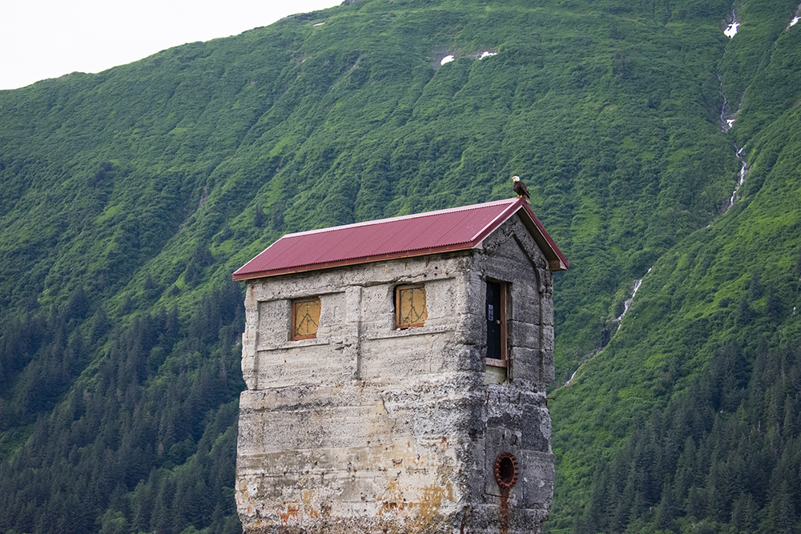
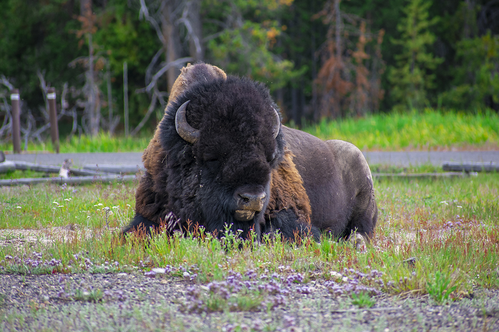
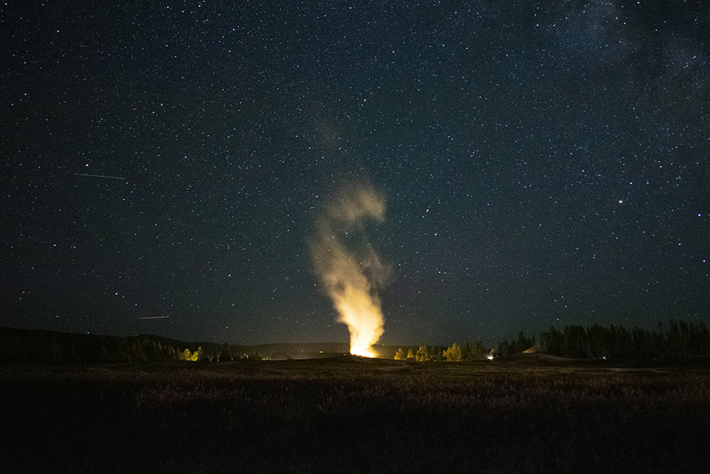
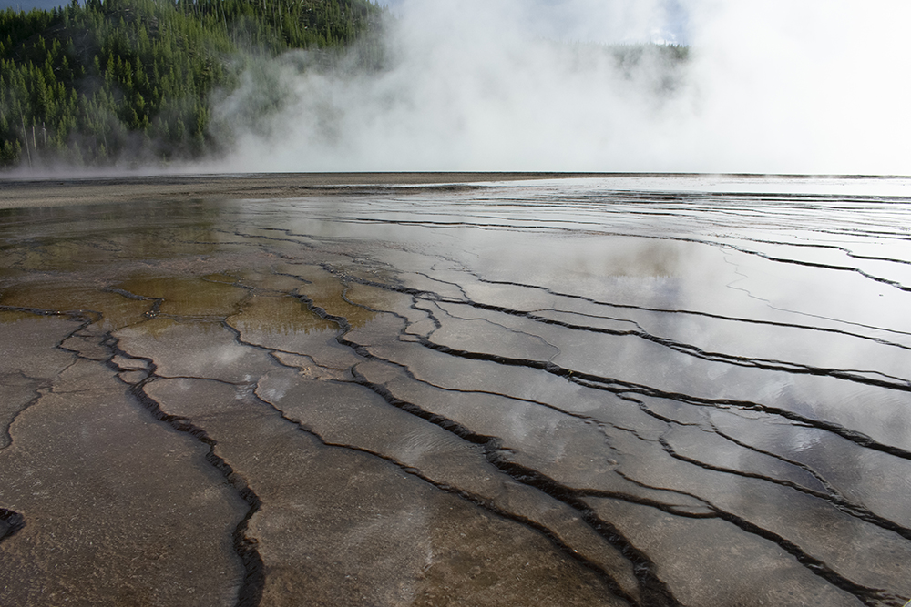
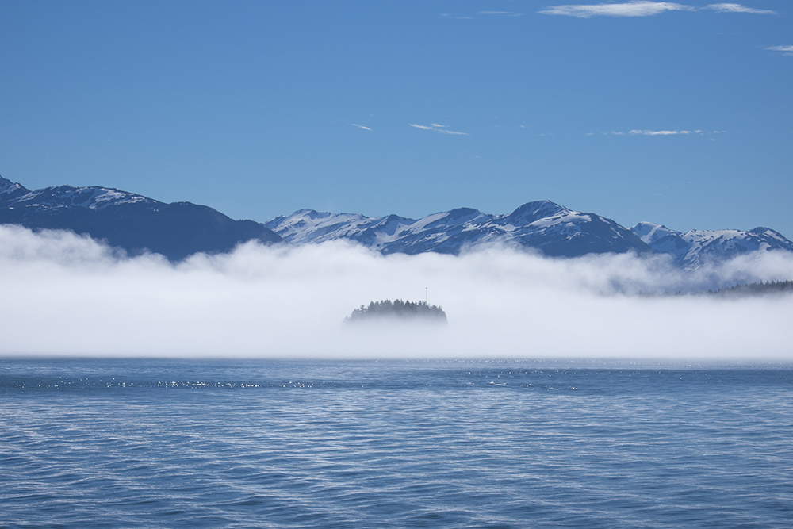

The Treadwell Pumphouse is all that remains of a once-expansive hydraulics station used to cool the Glory Hole Gold Mine
(yes, that was it's real name) that used to occupy a section of Douglas Island near Juneau, Alaska. A century has passed
since the mine closed but the historic ruins endure to this day, with the Pumphouse being among the most iconic relics
still remaining. And so it stands, silently watching over the valley through which the Gastineau Channel flows, and
often providing a roost for the myriad bald eagles that call the area home.

Coming back from a satisfying trek and photoshoot around the Old Faithful geyser basin in Yellowstone National Park,
I made my way back towards the employee dorms intent on resting my feet and retiring for the evening. My plans changed
when I sighted a majestic and sleepy bison lying in a field adjacent to the dorm building. Aware of the
adorable but potentially dangerous nature of bison, I slipped on my zoom lens and captured this photo from across
the small stream running behind the Old Faithful Inn. To this day, it remains one of my favorite photos I've ever taken.

It was during a cool, cloudless night in Yellowstone that I ventured out onto the geyserside walkways in the pitch-black
darkness of a new moon that I took this picture. Turning my camera to the legendary Old Faithful which gently seethed in
the distance, I tried for a long-exposure photo. The fire beneath the geyser and the icy stars in the sky came to life
in the result, not to mention a shooting star or two. There I would stand for an hour more, snapping my shutter away
beneath that empty northern hemisphere.

The Grand Prismatic Spring is another one of Yellowstone National Park's most iconic thermal features. While the
technicolor waters and bacterial mats of the spring proper are naturally the most prominent element of the Spring,
the area surrounding it for hundreds of feet in all directions is composed of delicate steppes. These are formed from
the deposition of minerals dissolved in the water. Combined with the gentle discharge of the Spring, these transform
into near-perfect mirrors in the right weather conditions. Sights as these are incredible, though best observed from
the safety of the designated boardwalk.

As my group and I prepared to return from our two day excursion to Coghlan Island off the coast of Auke Bay, Alaska,
I became fascinated with the unearthly fog that had enshrouded the island. I grabbed my camera and headed north down
the beach. By the time I achieved the tip of the island, the wall of fog had shifted towards the mainland's shore.
I watched its advance beneath the endless sky. The form of what I would later know as Battleship Island gradually
emerged from the curtain like a titanic ghost. The team began to shout to me that the boat was leaving soon. I snapped
this photo and took off down the beach with the stupidest, widest grin on my face.